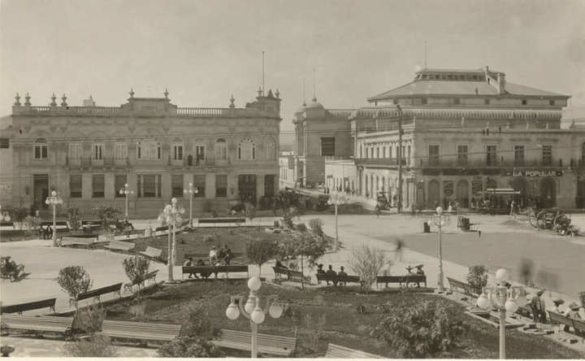
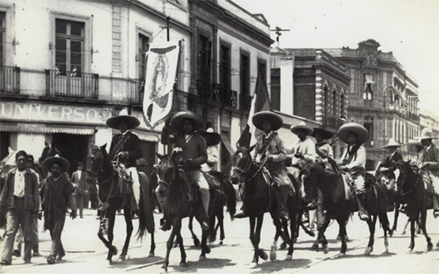
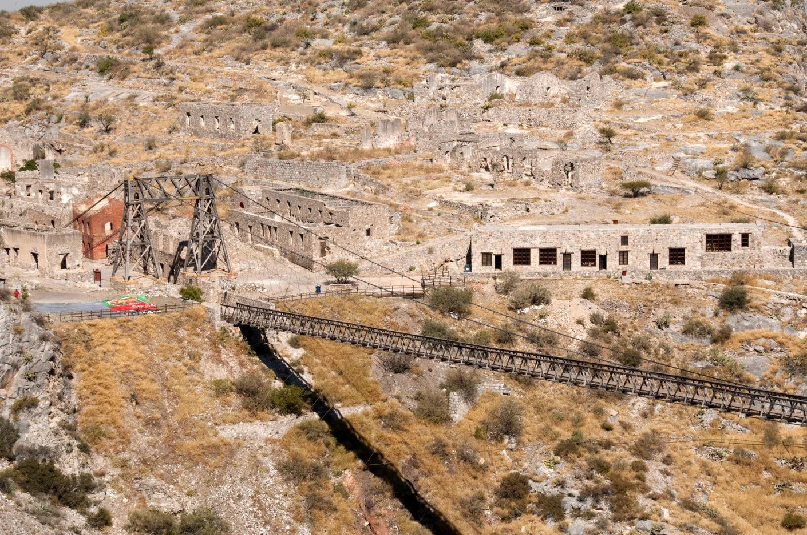

Hospedaje
Donec sed odio dui. Etiam porta sem malesuada magna mollis euismod. Nullam id dolor id nibh ultricies vehicula ut id elit. Morbi leo risus, porta ac consectetur ac, vestibulum at eros. Praesent commodo cursus magna.

Actividades
Duis mollis, est non commodo luctus, nisi erat porttitor ligula, eget lacinia odio sem nec elit. Cras mattis consectetur purus sit amet fermentum. Fusce dapibus, tellus ac cursus commodo, tortor mauris condimentum nibh.
Comida
Donec sed odio dui. Cras justo odio, dapibus ac facilisis in, egestas eget quam. Vestibulum id ligula porta felis euismod semper. Fusce dapibus, tellus ac cursus commodo, tortor mauris condimentum nibh, ut fermentum massa justo sit amet risus.
Fundación de la ciudad de Durango (1563) Elnacimiento de una legenda.
El 8 de julio de 1563, el explorador español Francisco de Ibarra fundó la ciudad de Durango, originalmente conocida como Villa de Guadiana. Este evento marcó el inicio del desarrollo colonial en la región, con Durango convirtiéndose en un importante centro administrativo y comercial del norte de Nueva España. La ciudad fue sede del obispado y tuvo un papel crucial en las rutas comerciales que conectaban la minería y otras actividades económicas del norte con el centro del virreinato.

Revolución Mexicana en Durango (1910-1920)La lucha armada
Durango fue un estado clave durante la Revolución Mexicana. Sus habitantes participaron activamente en el conflicto, y algunos de los líderes revolucionarios más importantes, como Francisco Villa (Pancho Villa), tuvieron raíces en esta región. Villa, uno de los personajes más influyentes del movimiento revolucionario, operó extensamente en Durango y sus alrededores, contribuyendo a los cambios sociales y políticos que ocurrieron en México durante y después del conflicto.

Desarrollo minero en el siglo XVIII y XIXMineria como eje de desarrollo
Durango fue conocido por su vasta riqueza minera, particularmente en la extracción de plata, oro y otros minerales. Durante el siglo XVIII, la minería impulsó el crecimiento económico del estado y atrajo a muchos colonos. Posteriormente, en el siglo XIX, este sector se mantuvo como uno de los pilares económicos, lo que permitió el surgimiento de una aristocracia minera y dio forma a las estructuras sociales y políticas de la región. .
